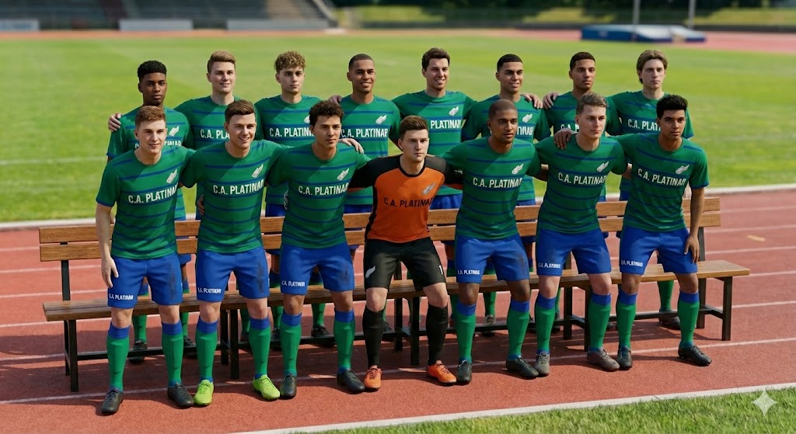
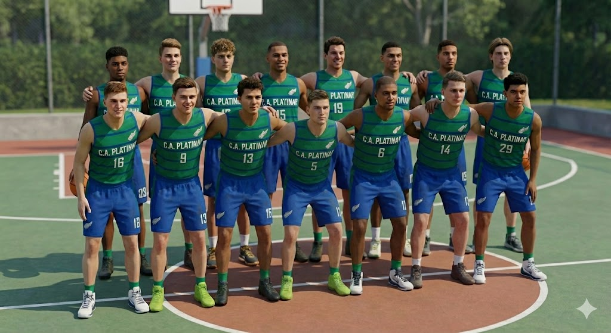
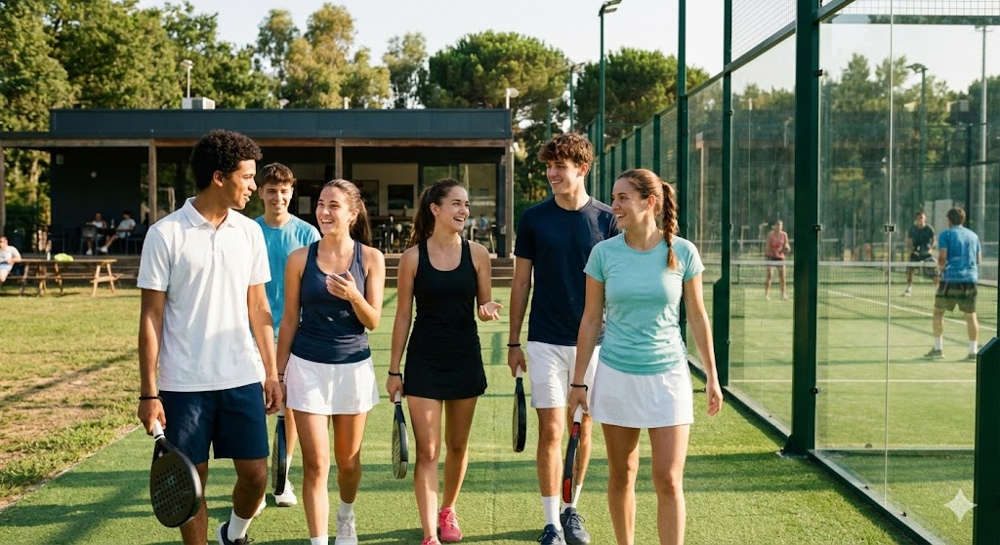

Equipo de Futbol
Grupo de elite del club. Nuestro primer equipo de fútbol compite en la liga regional, destacando por su táctica y cohesión. Con entrenamientos diarios y mucha dedicación, buscan llevar el nombre del club a lo más alto.


El máximo nivel de competición Club. Esfuerzo, compromiso y orgullo en cada partido.

Grupo de elite del club. Nuestro primer equipo de fútbol compite en la liga regional, destacando por su táctica y cohesión. Con entrenamientos diarios y mucha dedicación, buscan llevar el nombre del club a lo más alto.

Aparte de futbol contamos con un equipo de baloncesto, la elite bajo el aro. Nuestro equipo senior de baloncesto destaca por su juego rápido y su defensa férrea.

Aunque no llegan a competir a nivel nacional, cpontamos con equipos senior de waterpolo, tenis, karate y padel.